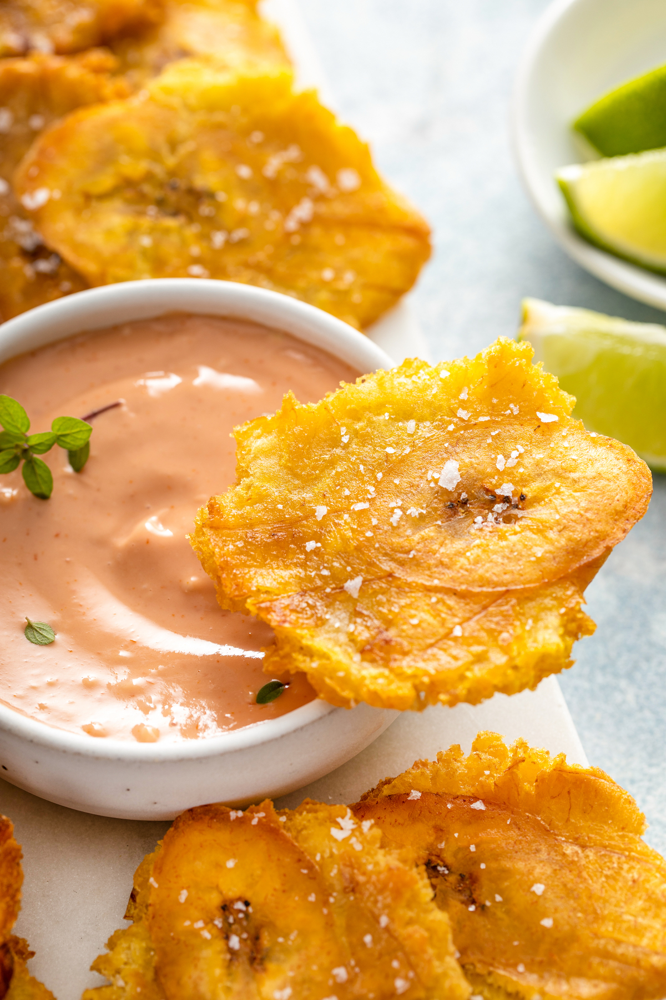

Tostones

Description
Tostones are crispy fried plantains that are smashed and fried twice to create a savory appetizer, snack or side dish! Popular throughout Latin America and the Caribbean, we are serving these fried plantains Puerto Rican style with a traditional garlicky mayo-ketchup dip!
Ingredients
Vegetable Oil
Green Plantains
Garlic
Lime Juice
Salt
Steps
- Make The Seasoned Water: In a medium sized bowl, whisk together water, garlic, kosher salt and lime juice. Set aside.
- Heat Up the Oil: Heat the vegetable oil over medium heat, in a large deep heavy bottomed pan. You want the oil to be about a third of the way up the side of the pan.
- Cook the Plantains: Fry the peeled and sliced plantains in batches. Add about a third of the plantain slices to the pan and let them cook for 3-4 minutes on each side until golden but still slightly pale.
- Let the Plantains Cool: Remove plantains from the oil and place them on a cookie cooling rack or a plate with a paper towel. Repeat the frying process in batches with the remaining plantain pieces.
- Smash the Plantains: Smash each of the plantains with a tostonera, the bottom of a glass, or two plates stacked on top of each other. Do not too press too hard or they may start to break apart, but you do want to flatten them!
- Dip The Plantains: Dip the smashed plantain into your water/garlic/lime/salt mixture. Let it sit in the water for a few seconds, drain off the water mixture and add the smashed plantain back into the oil.
- Re-Fry: Fry them for about 2 minutes more on each side, or until they turn a dark golden color and they have turned crispy on the edges.
- Season and Serve: Transfer back to a paper towel lined plate to drain any excess oil. Immediately sprinkle the tostones with salt. Serve as desired, I recommend with some Mayo-Ketchup Sauce to dip them into!